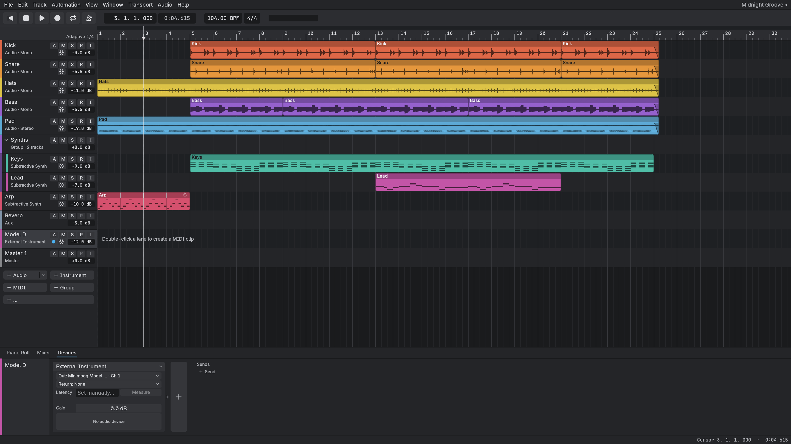
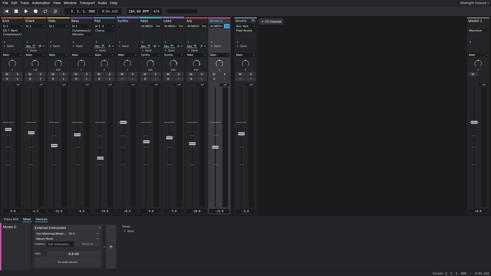
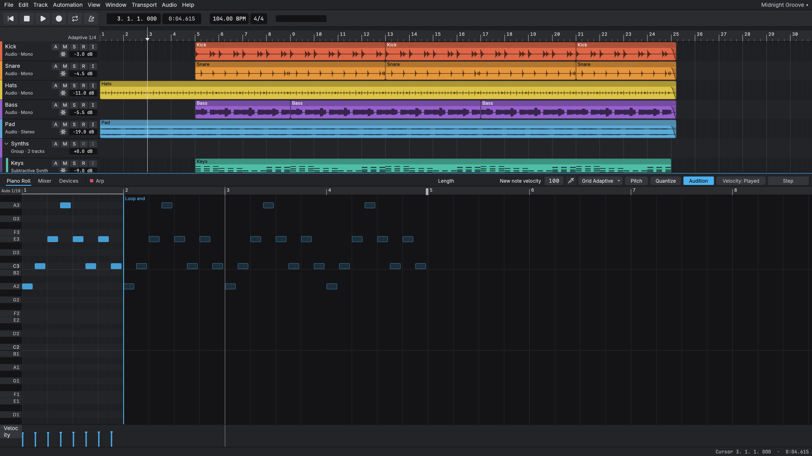
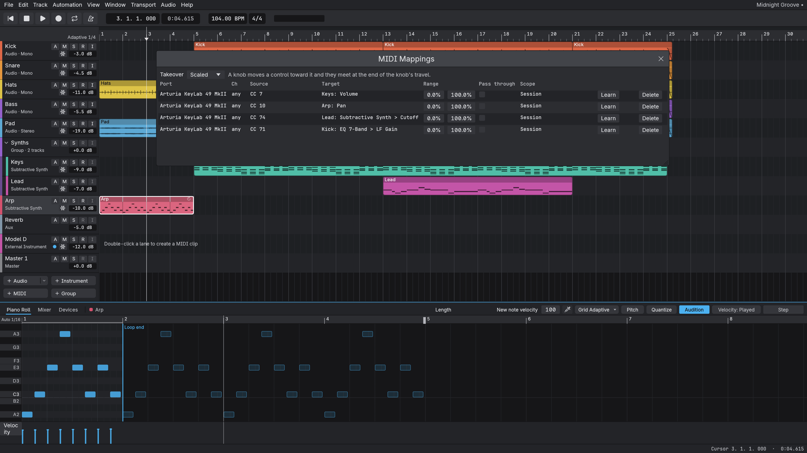
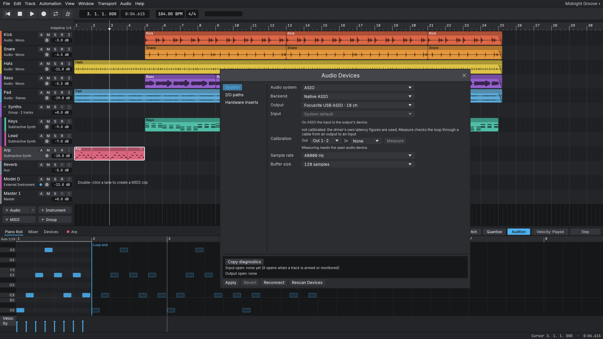

Native ASIO
Talks to your driver directly, without the Steinberg SDK.

An open-source DAW in Rust. Cubase bones, Ableton manners.
Loading the latest release...
Talks to your driver directly, without the Steinberg SDK.
Round-trip numbers in the app, verified against the driver.
Plug-ins load on their own thread and cannot freeze the window.
Ableton and Logic ergonomics on a measured engine.




